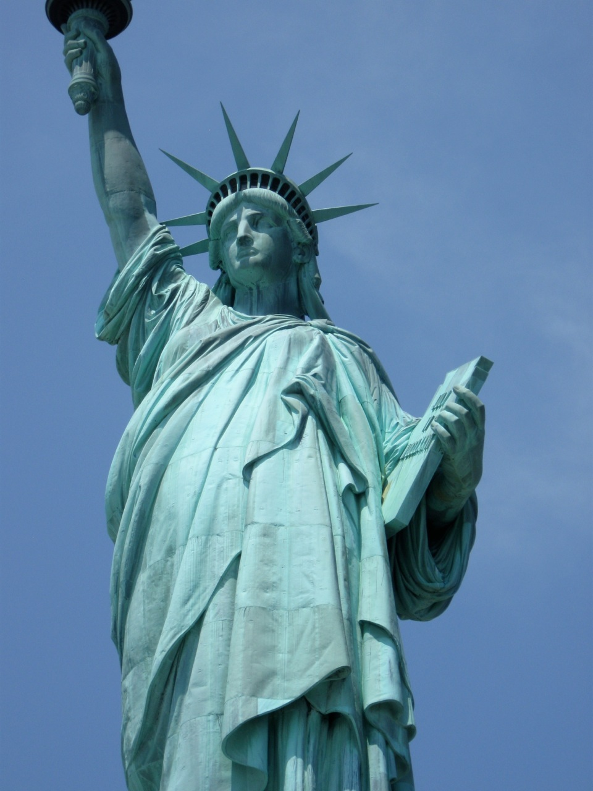
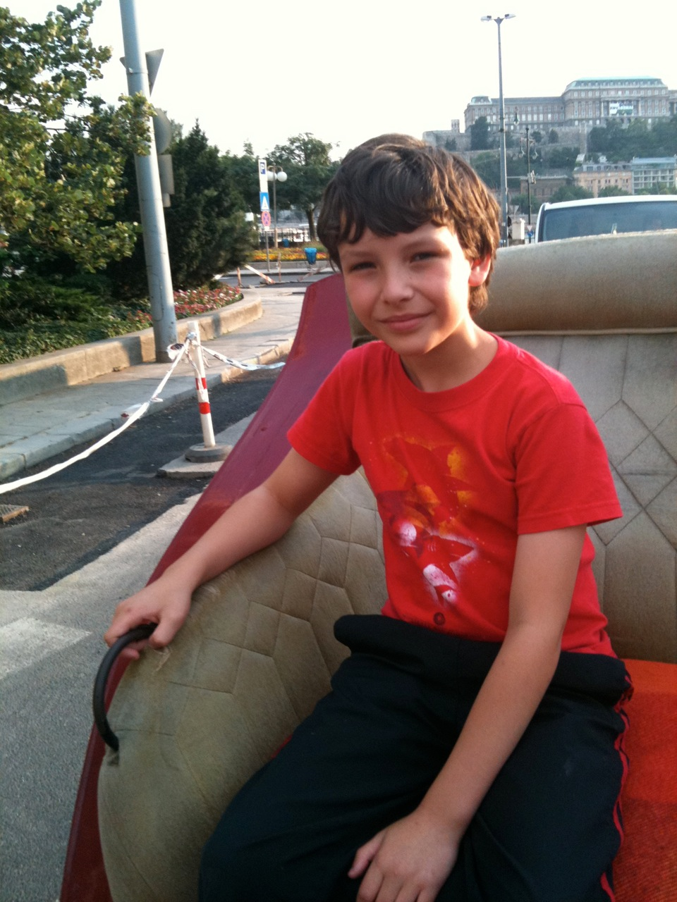
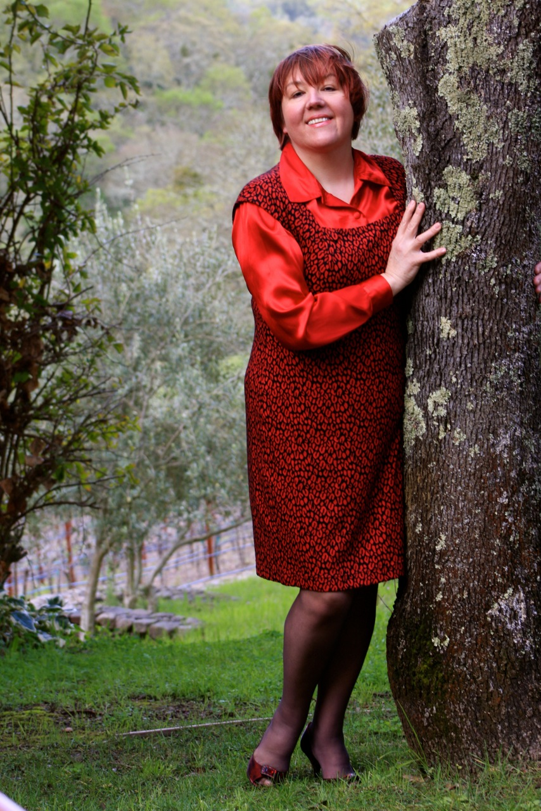

My Life's Most Defining Moments
Today I had a lazy day except, of course the usual chores on the weekend, the cooking, the shopping for supplies for my preteen, picking up after him and his two friends who had a sleepover, laundry, watering my plants and try to clean the aquarium and finally resupply and rearrange my balcony with new plants that have more green shoots than leftover dried ones from the winter. I managed all of that and I could still have an hour nap in the afternoon, had some reading done and answering a few emails, I even did a little bit of Face Booking, but I forgot to do the most important thing, namely my first blog for Mitzi's Musing.
Still not too late, I have a half an hour and I already had an idea what I wanted to write about, the most defining moments in someone's life. I was thinking of the other day if and how would anyone pick moments of his or her life that completely changed the direction and flow of their lives and I got to the conclusion if I think hard enough I can pick three that was that way for me. The interesting thing about them is, that I have a great emotion that I kept, but I do not remember much of the details. Should I? I wonder? How is it for to others? Would they forget or would they retain the details of these moments?
Since I immigrated to the US in my thirties and chose another home country I have to choose that as one of my big moments in life, when I got my citizenship. Don't take me wrong, I love Hungary, my native country, but I feel I was really a born American in spirit, I do love the way people have their say here and their dreams realized if they are willing to work hard for it. I remember it was in a huge hall in San Jose and hundreds of other people were lining up with me, so it was a great experience, but my most insistent memory is that the previous day me and my husband drove by to measure the time and be familiar with the downtown surrounding, not to be late. We were on time and it was an elating experience, but I do not know what we did after the ceremony? I just can't remember.

The second one was the birth of my son, Ali and it is a very important moment for every mom so it is not surprising I have to go with that, but in my case it was even harder a little... One factor is that I had a meningioma (a small, benign tumor of the lining of the brain) for a number of years when this was going down and since I was pregnant we could not even check if it has grown or changed which they otherwise followed yearly by an MRI. I was lucky it turns out, it did not do much and I currently still going to yearly MRIs, but I did not know it then, only was hoping for it. The other factor was that I was a 45 year old woman without any other child. It still went well, I had to have a C-section on the account of some circumstances and being an MD and a neurologist made it extra hard since I knew all about the complications that could come.
I also knew how the spinal anesthesia applied because I used daily those long needles for spinal taps, but it is scarier when it is you, who is the patient. I only remember being so afraid, but walking in briskly and then smiling even on the operating table telling myself, that millions of women went through this before, it is not a big deal. I got a compliment from my doctor and the anesthesiologist telling me I was the first woman they have seen smiling during C-section. I asked to be awake only have local since I am also afraid of going under. Again, being a doctor was not an advantage, doctors make the most finicky patients. Well, it was a success and big deal and it completely changed my life for the better, I love to be a mom and I am crazy about my son.

The third one was the publication of my book and by all accounts it should have been the happy occasion, but it was also bittersweet. It was very good, because I could show my book and my dedication to my parents whose marriage was my inspiration for the book, but was very sad, because my mom was leaving me. She had a tumor, that was threatening to paralyze her and even though they gave her radiation to shrink the mass, we knew it was not going to be long when she will not be with us anymore. She passed away two weeks after my book came out on Amazon. My dad, who seemed fine, followed her in six weeks.
So I remember texting to a friend on the day of the Amazon listing, that it should be my happiest day, yet it is the saddest because of all the above mentioned things. I still think it was another life changing experience and will always think of it as one of my biggest growth as a person.
I wonder what are these defining moments for people? I got all my major accomplishments late except of course my medical degree, that I had like everyone else by the age of 25. By that time I had 18 years of studying behind me, which I incidentally liked, I think medicine is amazing. I became a neurologist after that. That was an added 4 years of studying and then came to the US where I changed directions and started to work in chemical labs, I still do that.
On the whole I think I was a late bloomer since I immigrated in my thirties, I had a baby at 45 and published a book by 55, most people do these things earlier in life, but I am happy about all of these things. I think it is never late to recognize that you need to change directions and make your life richer by a new experience.

I am curious what other people think of it, maybe this is unusual maybe they are more mainstream experiences than I thought.